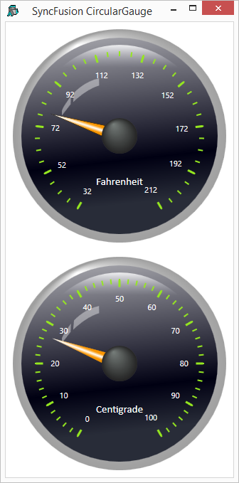

Like most Syncfusion controls, the CircularGauge is made up of a complex structure of objects, and the XAML (see variable XAML_SF) is too extensive to describe in detail herein. It was created from the sample XAML from the Syncfusion documentation for this control entitled Essential Gauge for WPF, which may be downloaded from http://help.syncfusion.com/wpf/gauge.
The key statements in the XAML are as follows:
xmlns:syncfusion="clr-namespace:Syncfusion.Windows.Gauge;assembly=Syncfusion.Gauge.WPF"
The above statement defines the prefix syncfusion to mean the specified Syncfusion namespace and assembly. When the prefix syncfusion is subsequently used in front of a control in the XAML, the system knows where to find it.
The next two statements define CircularPointer controls (the needles on the gauges); one for the Fahrenheit gauge (named f_pointer) and one for the Centigrade gauge (named c_pointer).
<syncfusion:CircularPointer Name="f_pointer" BorderWidth="0.3" PointerLength="100" PointerPlacement="Inside" PointerWidth="20" Value="32"/>
<syncfusion:CircularPointer Name="c_pointer" BorderWidth="0.3" PointerLength="100" PointerPlacement="Inside" PointerWidth="20" Value="0"/
The following functions were used to produce the example illustrated above. The main function is SF_TC_XAML.
∇ SF_TC_XAML;⎕USING;win;f_pointer;c_pointer;sink
[1]
[2] win←LoadXAML XAML_SF
[3]
[4] f_pointer←win.FindName⊂'f_pointer'
[5] c_pointer←win.FindName⊂'c_pointer'
[6]
[7] f_pointer.onMouseEnter←'MouseEnter'
[8] c_pointer.onMouseEnter←'MouseEnter'
[9]
[10] sink←win.ShowDialog
∇
After creating the Window from the text in XAML_SF, the function SF_TC_XAML obtains refs to the two CircularPointer controls named f_pointer (in the Fahrenheit gauge) and c_pointer (in the Centrigrade gauge). It then attaches the MouseEnter callback to each of these objects.
∇ MouseEnter(this ev);ptrs
[1] ptrs←f_pointer c_pointer
[2] ptrs.onValueChanged←(ptrs⍳this)⌽0 'TempChanged'
∇
In this example, the user grabs one of the gauge needles and moves it around the face of the gauge. When the user moves the mouse into one of these needles, the MouseEnter callback fires. The function MouseEnter receives the CircularPointer object that generated the event this as the first item in its argument.
The code simply attaches the callback function TempChanged to this, and disables any callback on the other CircularPointer object.
Note that if both CircularPointer objects had callbacks on TempChanged at the same time, the system would enter a callback loop.
∇ TempChanged(obj ev)
[1] :Select obj
[2] :Case f_pointer
[3] c_pointer.Value←(obj.Value-32)×5÷9
[4] :Case c_pointer
[5] f_pointer.Value←32+obj.Value÷5÷9
[6] :EndSelect
∇
The LoadXAML function used in this example is subtly different from previous examples.
∇ win←LoadXAML xaml;⎕USING;str;xml
[1] ⎕USING←'System.IO'
[2] ⎕USING,←⊂'System.Windows.Markup'
[3] ⎕USING,←⊂'System.Xml,system.xml.dll'
[4] ⎕USING,←⊂'System.Windows.Controls,WPF/PresentationFramework.dll'
[5] ⎕USING,←⊂'Syncfusion.Windows.Gauge,Syncfusion/4.5/Syncfusion.Gauge.WPF.dll'
[6] str←⎕NEW StringReader(⊂xaml)
[7] xml←⎕NEW XmlTextReader str
[8] win←XamlReader.Load xml
∇
In particular, it contains the all-important statement:
[5] ⎕USING,←⊂'Syncfusion.Windows.Gauge,
Syncfusion/4.5/Syncfusion.Gauge.WPF.dll'This statement tells APL to search the .Net namespace named Syncfusion.Windows.Gauge, which is located in the assembly file whose path (relative to the Dyalog installation directory) is Syncfusion/4.5/Syncfusion.Gauge.WPF.dll.